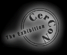

CV

Josef Roschar
http://web20. mindlink. net/ph/vessels/vesseIsWelcome. html
GROUP EXHIBITIONS
- 1982: Gallery Van Hulsen; Leeuwarden, Netherlands
- 1983: Atelier De Ceramique; Toronto, Canada
- 1984: Atelier De Ceramique; Toronto, Canada
- 1985: Atelier De Ceramique; Amsterdam, Nertherlands
Interior Design Studio Karin Haddad; Paris, France
- 1986: Epona Gallery; Paris, France
Interior Design Studio Karin Haddad; Paris, France
- 1987: Kunst an Keramiek Gallery; Deventer, Netherlands
La Moulin Studio; Gordes, France
- 1988: Roschar Gallery; Toronto, Canada
- 1991: Interior Design Studio Karin Haddad; Paris, France
- 1993: George Gardiner Museum for Ceramic Art Toronto, Canada
- 1994: George Gardiner Museum for Ceramic Art Toronto, Canada
Charles Levitan Gallery, New York, NY
Owl 57 Galleries, Woodmere, NY
- 1995: John Ramsey Gallery, Vancouver, BC
- 1996: Eleonore Austerer Gallery, San Francisco, CA
SOLO EXHIBITlONS
- 1987
Gallery Henk de Greef; Wassenaar, Netherlands
- 1988
Quasi Mode; Toronto, Canada
- 1993
Tanishima Gallery, Tokyo, Japan
- 1994
The George R. Gardiner Museum of Ceramic Art, Toronto, Canada
- 1995
Jackson Kalef Gallery, Calgary, Canada
- 1996
The Russell Gallery of Fine Art, Peterborough, Canada
CORPORATE COLLECTIONS
- Bell Canada
- Hong Kong Bank of Canada
- The Meloche Comm. Group Inc.
- Forum Financial Corp.
- Bramelea Limited
- Canada Trust
- Hotel Inter-continental
- Andrew Hazelton Lanes
- CIBC
- MacMillan Rooke Boeckle
- Hotel Pacific Chiba, Chiba Ken Japan
- Aird and Berlis
- Torkin Maines and Arbus
- T.D.K Narita, Japan
- Copeland, Liss, Campbell, Toronto
- Ward, Howell, Illsley Partners, Toronto
- Harper Detroit Diesel
- Montesi Communications, Vancouver
- Cantel Inc.
- Terra Can Capital Corp.
- Upper Canada Land Corp.
- Smith Mallette Group
- Delta Chelsea Hotel
- Dakis & Wilder Design
- Adamson Industrial Design
- Mediacom Inc.
- Haworth Ltd.
- Rolex Canada
- HDL Capital Corporation
- Midland Walwyn
- Markle, May, Phibbs
- Unitel Edmonton, Alberto
- Sunnybrook Health Science Centre
- McCague, Wires, Peacock, Borlock
- Mclnnis and Lloyd, Toronto
- G.T. Global, Toronto
Government and Public Collections
- Vice-Counsel of France in Amsterdam, Alain Dougnac
- King and Queen of Spain
- Honourable Charles Milon, President of Regional
Council of Rhone Alps
PUBLICATlONS
- Azure Magazine, Nov 88
- Contact, No. 99, Summer 94
OUTSTANDING ACHIEVEMANT AWARD
- The 2nd International Ceramics Competition, 1989, Mino, Japan